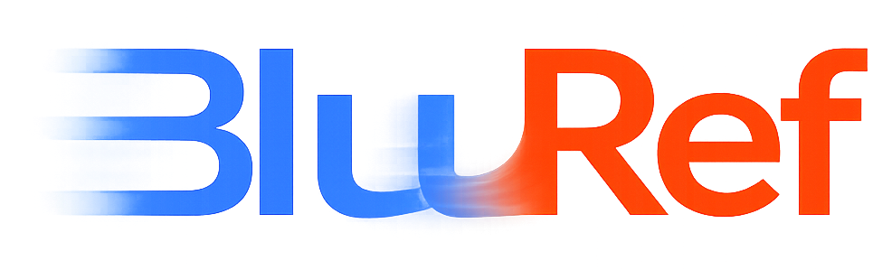
Unsupervised Image Deblurring with Dense-Matching References
†Work done while at Qualcomm AI Research. *Qualcomm AI Research is an initiative of Qualcomm Technologies, Inc.
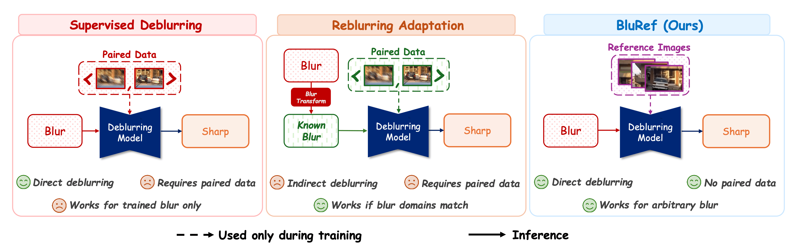
Abstract
Contributions
BluRef is the first framework to use unpaired sharp reference images for training only — no paired supervision, no pre-trained deblurring network, and no reference frames needed at inference. Unlike supervised reference-based methods that require exact correspondences, BluRef works with easily collected, temporally displaced frames.
BluRef's pseudo-GT images can be reused to train models of varying capacities, including lightweight networks for mobile deployment — something other unsupervised methods cannot provide.
Extensive experiments show BluRef outperforms all prior unsupervised methods. On the real-world RB2V benchmark, BluRef surpasses the supervised upper-bound (27.87 vs. 27.43 dB). On PhoneCraft (real smartphone data), BluRef achieves the best NIQE and FID scores.
Method
BluRef frames deblurring as an iterative enhancement process. Given a blurry image Iblur and N unpaired sharp reference images from similar scenes, our goal is to estimate the corresponding sharp image without any paired supervision. Crucially, none of the reference images needs to be the exact sharp version of the blurry input — they can be captured at different times and from different spatial perspectives. The dense matching module and pseudo-sharp generation are used only during training; at test time, BluRef operates as a direct single-pass deblurring network.
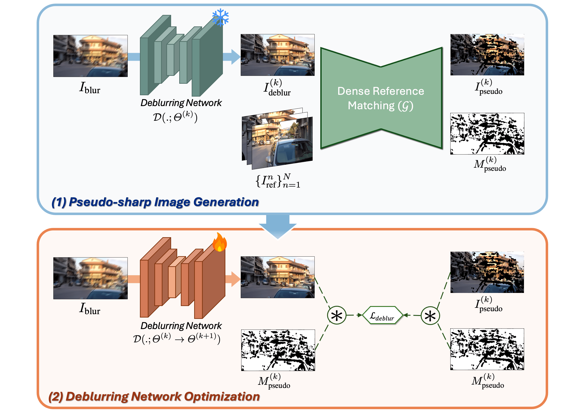
Hover over each step below to explore the pipeline
Collect Iblur and N unpaired sharp references {Irefn}. Feed into Dense Matching 𝒢.
𝒢 finds pixel-level correspondences → pseudo-sharp Ipseudo(k) + confidence mask Mpseudo(k).
Train NAFNet / Restormer using pseudo-sharp as GT under masked loss ℒdeblur.
Feed improved Ideblur(k) back → regenerate better pseudo-GT each epoch.
If the deblurring network trains with a single, fixed pseudo-sharp target (Step 3 alone), performance is limited by the initial low-quality pseudo-GT. By adding the iterative loop (Step 4), improved deblurred estimates feed back into dense matching to regenerate better pseudo-GT at each epoch — creating a self-improving cycle that converges toward ground-truth quality.
When multiple reference images are available, BluRef offers three strategies for combining their dense-matching outputs into a single pseudo-sharp target:
Apply 𝒟ℳ independently to each (Iblur, Irefn) pair, then average the resulting pseudo-sharp images weighted by confidence masks.
Iteratively refine Ipseudo by using the output of the previous iteration as input for the next, chaining sharp detail across references.
Combines both strategies — retaining sharp details from prior iterations and selectively enhancing previously unmatched regions. Achieves top performance.
The 𝒟ℳ model bridges the gap between blurry and sharp domains by learning to extract corresponding regions across both. It is trained self-supervisedly using only sharp images with synthetic warp augmentation — no blurry training images needed. The model takes a target image (blurry or deblurred) and a reference, outputting a warped result Itrans and a confidence mask Mconf. Random motion-blur augmentation prevents leakage of the target domain's blur patterns into DM training.
A key advantage of BluRef is that collecting training data is significantly simpler than assembling paired blur–sharp datasets. For each blurry image, we collect N sharp reference images from nearby frames in the same video. The exact protocol differs per dataset, reflecting the practical constraints of each scenario:
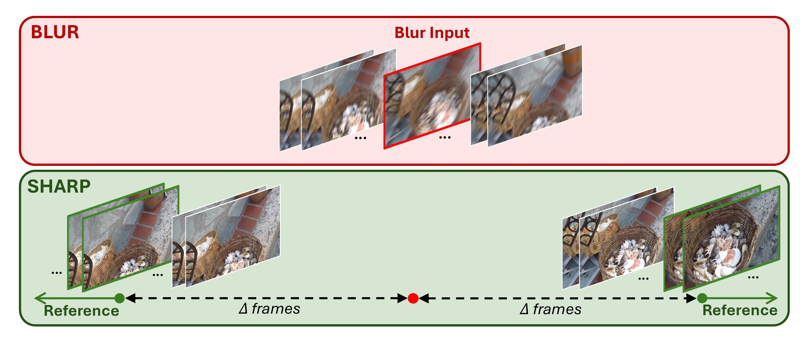
1,050 blurry + 1,053 sharp images from the same sequences. Sharp references are consecutive frames shifted by Δ ∈ {1, 10, 20} on each side. N = 6 references per blurry image by default.
5,400 blurry + 5,600 sharp images from real street scenes. Same temporal-shift protocol as GoPro. Tests BluRef's ability to handle real-world blur patterns and moving objects.
12 blurry + 11 sharp video clips (30–40s each, 60fps) from a handheld smartphone. Blurry and sharp clips are completely separate — references are randomly selected to eliminate any temporal correlation.
Experiments
Goal: Compare BluRef against existing unsupervised deblurring methods (DualGAN, UID-GAN, UAUD) and supervised upper-bounds (NAFNet, Restormer trained on paired data) across two benchmarks — GoPro (synthetic blur) and RB2V (real blur) — with temporal gaps Δ = 1, 10, and 20 frames.
Key finding: BluRef with Progressive Averaging consistently outperforms all unsupervised baselines by a large margin. On the real-world RB2V dataset, NAFNet-BluRef (Prog.) achieves 27.87 dB — surpassing the supervised Restormer upper-bound of 27.43 dB, despite using zero paired training data.
PSNR↑ / SSIM↑ scores. Best in bold red, second best underlined blue.
| Method | GoPro (Δ=1) | GoPro (Δ=10) | GoPro (Δ=20) | RB2V (Δ=1) | RB2V (Δ=10) | RB2V (Δ=20) |
|---|---|---|---|---|---|---|
| Unsupervised Deblurring | ||||||
| DualGAN | 22.23/0.721 | 22.10/0.719 | 21.24/0.702 | 21.01/0.512 | 20.87/0.500 | 20.92/0.505 |
| UID-GAN | 23.42/0.732 | 23.18/0.724 | 22.38/0.724 | 22.22/0.578 | 22.01/0.551 | 22.13/0.569 |
| UAUD | 24.25/0.792 | 24.02/0.750 | 23.77/0.745 | 22.87/0.590 | 22.29/0.581 | 22.28/0.581 |
| BluRef — NAFNet backbone (Ours) | ||||||
| NAFNet–BluRef (Avg.) | 29.32/0.933 | 29.21/0.915 | 29.15/0.911 | 25.97/0.783 | 25.96/0.783 | 25.65/0.775 |
| NAFNet–BluRef (Seq.) | 29.82/0.947 | 29.68/0.940 | 29.60/0.940 | 26.14/0.790 | 26.02/0.787 | 25.93/0.780 |
| NAFNet–BluRef (Prog.) ⭐ | 31.94/0.960 | 31.87/0.955 | 31.52/0.947 | 27.87/0.821 | 27.72/0.820 | 27.24/0.812 |
| BluRef — Restormer backbone (Ours) | ||||||
| Restormer–BluRef (Avg.) | 27.12/0.905 | 27.04/0.895 | 26.98/0.893 | 25.41/0.816 | 25.38/0.812 | 24.78/0.801 |
| Restormer–BluRef (Seq.) | 28.46/0.923 | 28.37/0.920 | 28.31/0.912 | 25.22/0.810 | 25.20/0.811 | 24.73/0.792 |
| Restormer–BluRef (Prog.) | 31.02/0.950 | 30.97/0.949 | 30.95/0.938 | 26.82/0.839 | 26.76/0.832 | 26.13/0.829 |
| Supervised Upper-bound | ||||||
| NAFNet (supervised) | 33.32 / 0.962 | 28.54 / 0.824 | ||||
| Restormer (supervised) | 32.92 / 0.961 | 27.43 / 0.849 | ||||
Visual examples confirm the quantitative trends. Unsupervised baselines produce blurry or artifact-laden outputs, while BluRef recovers fine details — body shapes, facial features, and textures — approaching supervised quality.
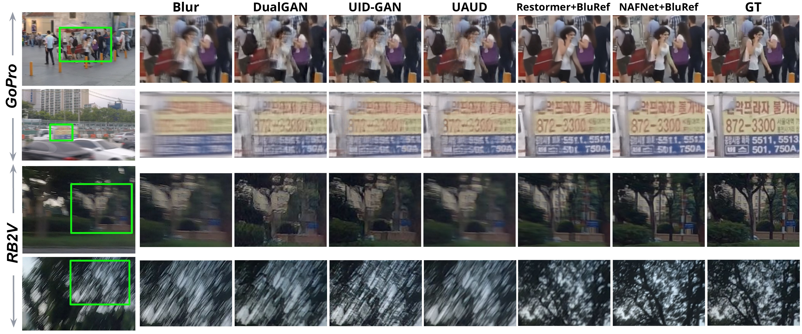
Ablation
In practice, reference frames may be temporally far from the blurry input, leading to significant content misalignment. We test BluRef's robustness by increasing Δ from 1 to 10 and 20 frames — drastically reducing the overlap between blur and reference content.
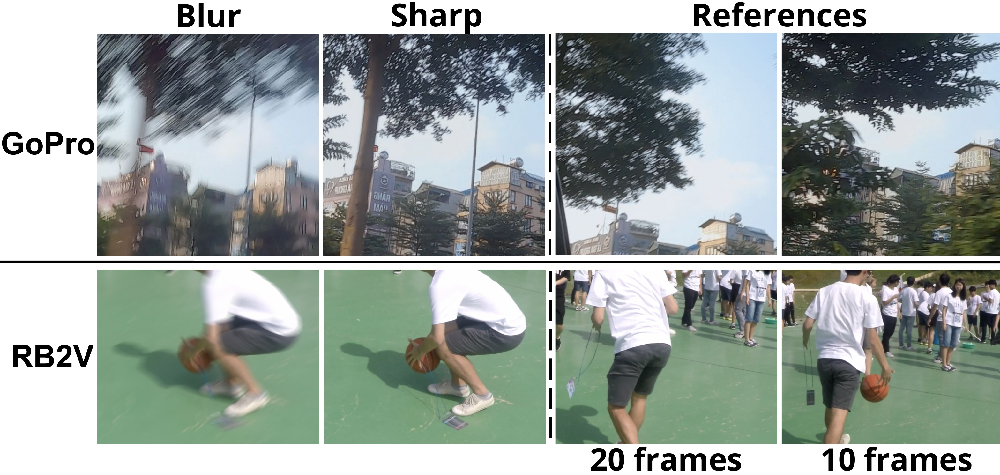
Despite severe content gaps, BluRef's dense matching extracts enough correspondences for effective pseudo-sharp generation.
| Dataset | Δ = 10 | Δ = 20 |
|---|---|---|
| GoPro | 36.1% | 28.4% |
| RB2V | 33.7% | 25.2% |
All percentages are below 40%, yet BluRef shows only minor PSNR drops (e.g., 31.94→31.52 dB on GoPro, 27.87→27.24 dB on RB2V from Δ=1 to Δ=20). This confirms BluRef is practical for real-world settings where exact temporal alignment is not available.
As training progresses, the deblurring network produces cleaner estimates, which in turn provide better inputs for the dense matching module. This virtuous cycle progressively expands the confidence mask coverage and improves pseudo-sharp quality.
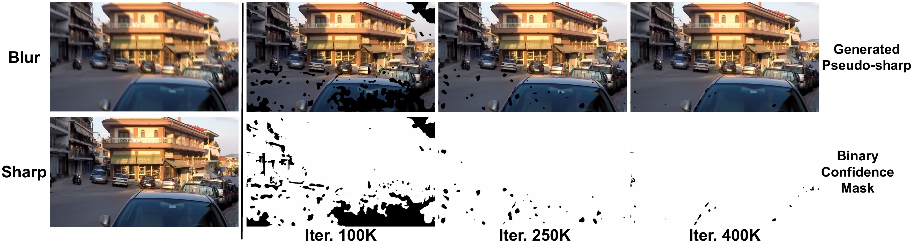
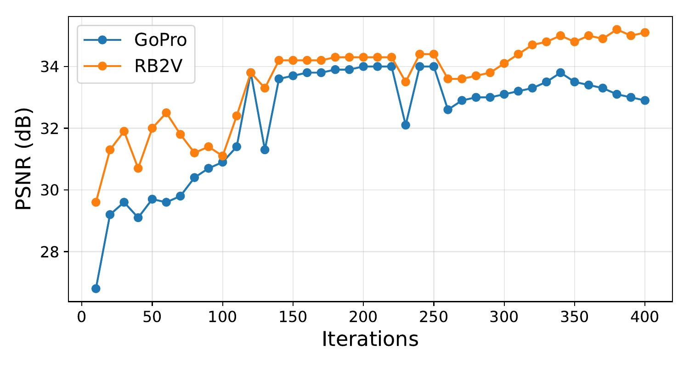
Real-World Generalization
Why PhoneCraft matters: PhoneCraft is a challenging real-world benchmark consisting of 12 blurry and 11 sharp video clips (30–40 seconds each, 60fps) recorded by a handheld smartphone in unconstrained environments. Unlike GoPro and RB2V, PhoneCraft has no paired ground truth and no temporal alignment between blurry and sharp clips at all. Blurry frames arise from rapid camera or object motion, while sharp clips are captured when the camera is mostly static. References are randomly selected from separate sharp clips for each blurry input, eliminating any temporal correlation.
This experiment directly demonstrates BluRef's practicality: it confirms that our method works with separate, unsynchronized sharp and blurry videos — a setting that is trivially easy to collect in practice, requiring no special equipment or controlled conditions.
Collecting usable training data in BluRef's setting is drastically simpler than assembling paired blur–sharp datasets. Just record blurry and sharp clips of similar scenes — no synchronization needed.
BluRef handles completely separate, unsynchronized blurry and sharp recordings. References are randomly sampled, proving the method does not rely on temporal correspondence.
Strong performance on unconstrained smartphone data — with complex blur patterns, varying motion, and no controlled conditions — confirms generalization beyond curated benchmarks.
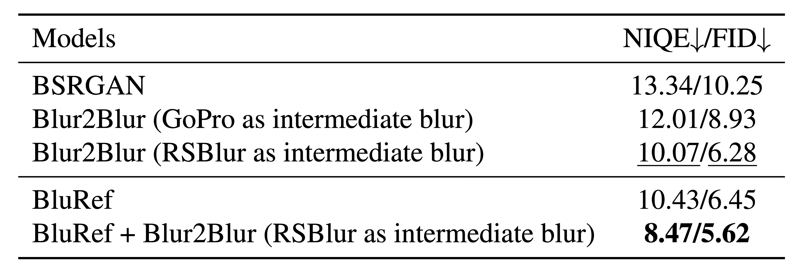
Result: BluRef alone already outperforms all baselines including Blur2Blur variants. When combined with Blur2Blur (RSBlur), the synergy pushes results to 8.47/5.62, demonstrating that BluRef's pseudo-sharp supervision is complementary to reblurring-based approaches.
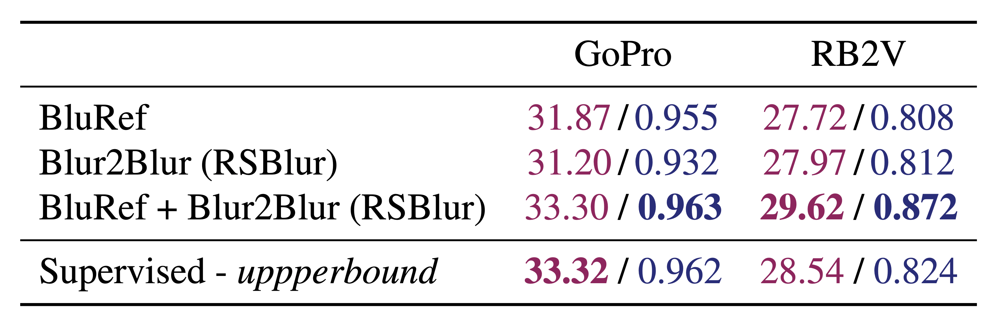
Result: Combining BluRef with Blur2Blur and a supervised deblurring network surpasses the supervised upper-bound on both datasets — 33.30 vs. 33.32 on GoPro and 29.62 vs. 28.54 on RB2V.
Supervised models are fundamentally limited by the fidelity of their ground-truth labels. Even when paired data can be collected using specialized hardware, the resulting "sharp" labels are rarely perfect. On RB2V, hardware limitations introduce residual blur into the ground-truth images, causing supervised models to overfit to these imperfect labels.
In contrast, BluRef leverages external sharp reference frames — which can be cleaner than the hardware-limited ground truth — to generate pseudo-sharp supervision that exceeds the quality of available labels. This advantage is further demonstrated on PhoneCraft, where no ground truth exists at all: supervised baselines struggle while BluRef continues to generalize effectively.
As shown in Table 5, our unsupervised framework (BluRef + Blur2Blur) outperforms supervised models on both GoPro and RB2V — proving that reference-based pseudo-GT can overcome the ceiling imposed by imperfect paired data. See the qualitative comparison below:
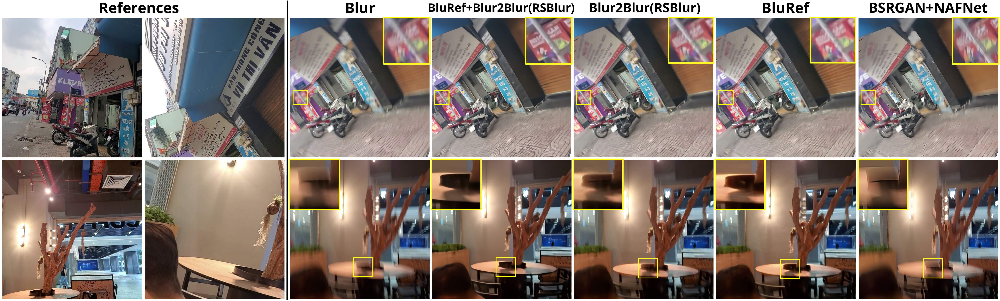
Citation
Please cite the arXiv version until CVPR'26 proceedings release.
@article{pham2026bluref,
title={BluRef: Unsupervised Image Deblurring with Dense-Matching References},
author={Pham, Bang-Dang and Tran, Anh and Pham, Cuong and Hoai, Minh},
journal={arXiv preprint arXiv:2603.14176},
year={2026}
}
References